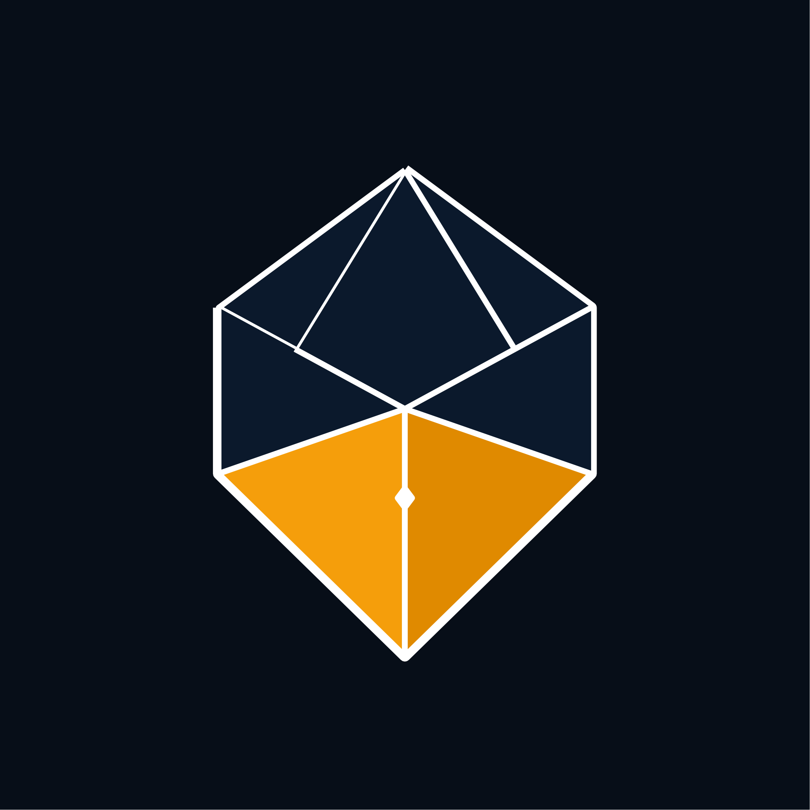
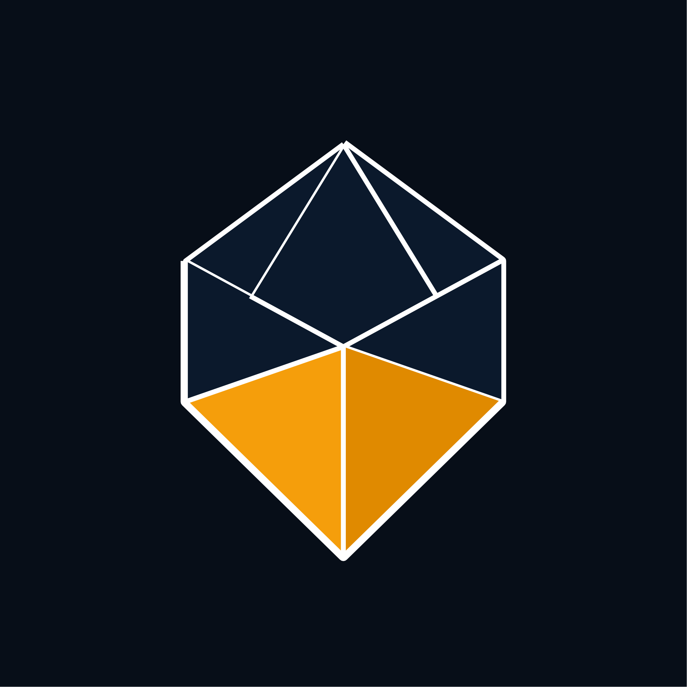

Menghilangkan efek pareidolia "mata/pupil biologis" dan menggantinya dengan detail mekanis pena presisi tinggi.
Pada desain sebelumnya, lingkaran ventilasi memiliki titik hitam/navy di tengahnya (radius 10px di dalam radius 26px).
Secara neuropsikologi visual, otak manusia memiliki kecenderungan bawaan (*face/eye pareidolia*) untuk melihat bentuk bulat konsentris di dalam segitiga/poligon sebagai pupil mata hewan (burung hantu, ular, atau serangga).
Pada pena bulu/fountain pen asli, breather hole adalah lubang tembus mekanis (*pure negative space perforation*) untuk sirkulasi udara dan kompensasi tinta, bukan struktur biologis. Dengan menghilangkan titik pupil dan merampingkan geometrinya, logo kembali 100% ke esensi: alat tulis perjanjian fiduciari & ketelitian formal auditor.

